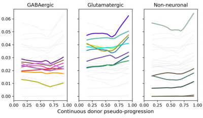
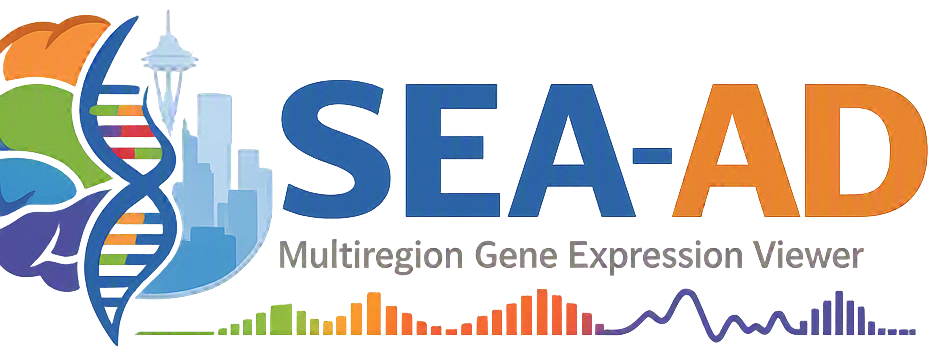
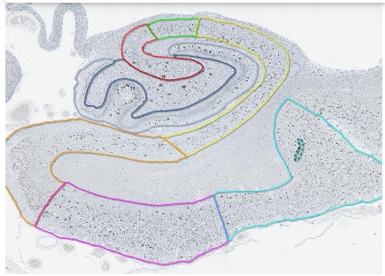
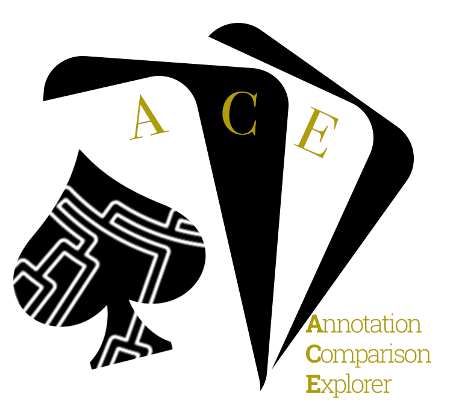
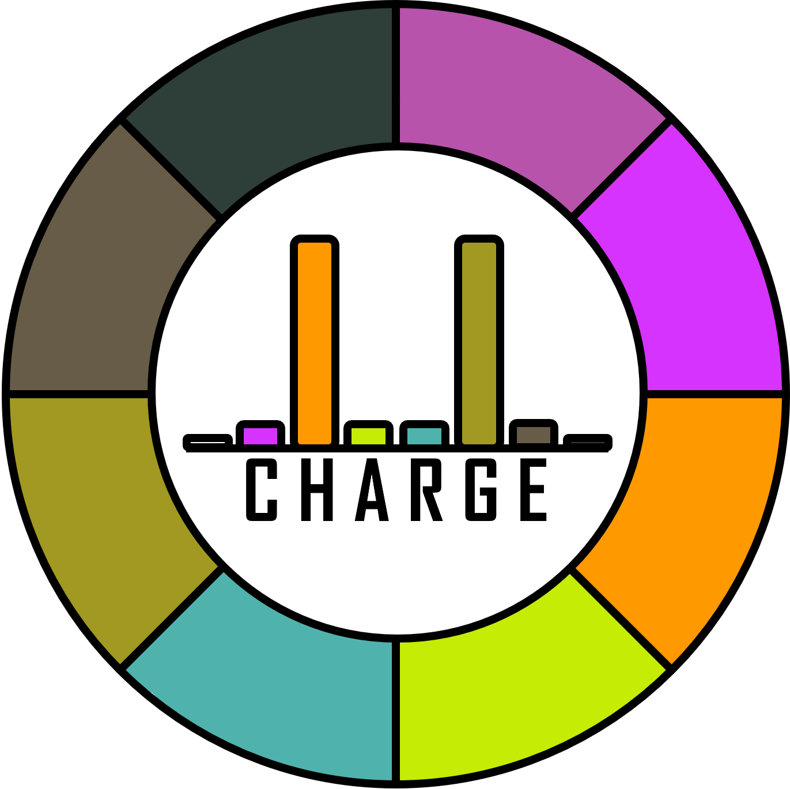
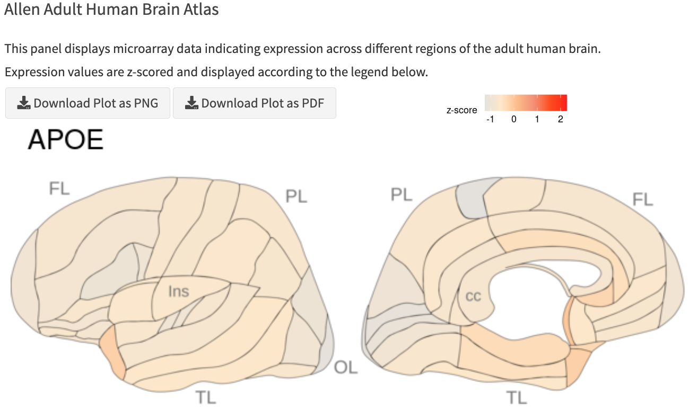
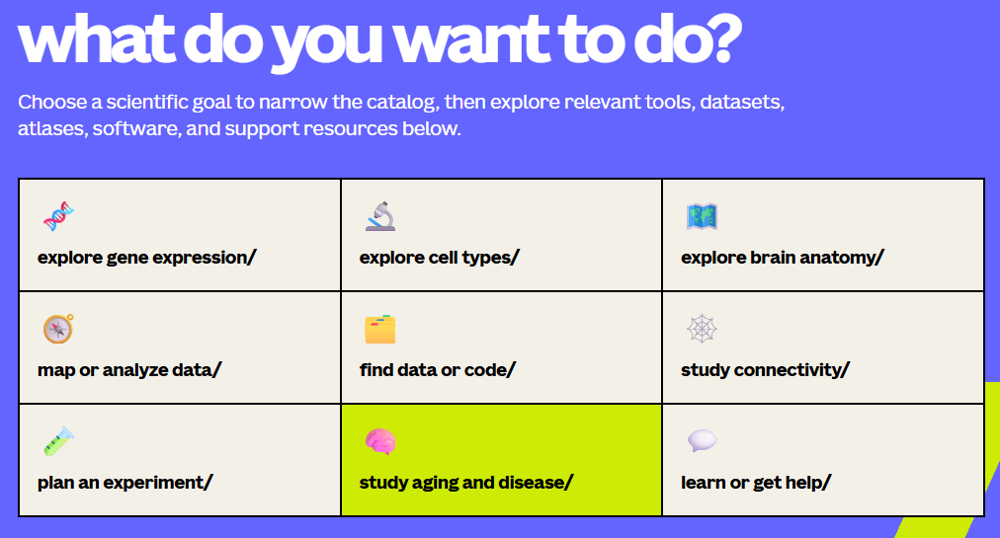

A collection of interactive tools and prototype applications for the Seattle Alzheimer’s Disease Brain Cell Atlas (SEA-AD). These applications provide access to gene expression, cell type, trajectory, neuropathology, and annotation exploration resources. Many of these tools are works in progress. We encourage feedback using the link below!

Identify and visualize cell type-specific gene expression changes across AD pseudo-progression in MTG.

Explore gene expression patterns in multi-region single cell data in the context of cell types, brain regions, and disease progression.

Explore neuropathology images and associated measurements from multiple brain region in SEA-AD donors.

Compare cell type annotations between SEA-AD and ten community studies of AD or user data from MapMyCells.

Identify genes of potential biological interest in multiple cell type taxonomies (including SEA-AD MTG).

Explore patterns of gene expression in the brain across multiple Allen Brain Atlases (including SEA-AD).

Visit a user-friendly entry point into tools and resources available on Allen Brain Map and SEA-AD.org.
Have a suggestion for how to improve one of these tools? Please fill out this form and let us know!
Have an application that you want included in the Sandbox? Either fill out this form or submit a GitHub issue with a the tool name, short description, application URL, repository URL, and an icon image and we will add it to the site!